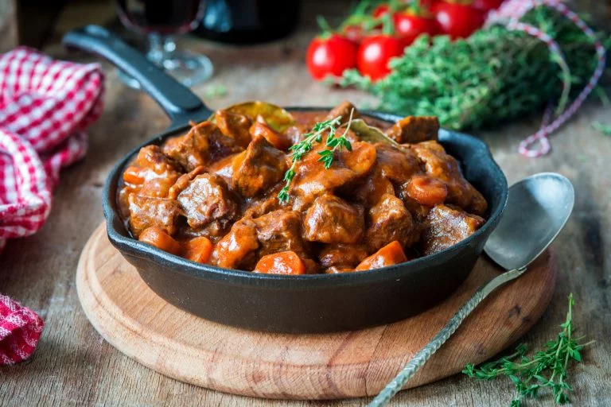

Boeuf Bourguignon

Description
Boeuf Bourguignon hails from Burgundy in Eastern France. Originally a peasant dish, this recipe is now a staple in French restaurants around the world. Traditionally, the cheap cuts of meat would be tenderized in wine for two days to intensify the flavors, although some shortcuts can be taken.
Ingredients
- 3/4lb boneless beef sirloin steak
- 1/4 teaspoon salt
- 1/4 teaspoon pepper
- 2 tablespoons olive oil
- 1 cup sliced mushrooms
- 1 slice bacon, chopped
- 1 small onion, sliced
- 1 tablespoon canned Muir Glen™ organic tomato paste
- 1 clove garlic, finely chopped
- 1/2 teaspoon chopped fresh thyme leaves
- 1 tablespoon all-purpose flour
- 1 cup beef flavored broth
- 1/2 cup dry red wine
- 1 tablespoon chopped fresh parsley leaves
Steps
- Season beef cubes with salt and pepper. In 10-inch nonstick skillet, heat 1 tablespoon of the oil over medium-high heat. Add beef, and cook 2 to 3 minutes, turning frequently, until browned on outsides, but still rare in the middle. Remove from skillet; keep warm.
- Heat remaining 1 tablespoon oil in skillet over medium-high heat. Add mushrooms; cook and stir 3 to 4 minutes or until tender and browned. Remove from skillet; keep warm.
- Reduce heat to medium; add bacon and onion. Cook and stir 3 to 4 minutes or until onions are softened and beginning to brown. Add tomato paste, garlic and thyme. Cook and stir 1 minute. Add flour; cook and stir 1 minute.
- Add cooked mushrooms, broth and wine; heat to boiling. Reduce heat to low; simmer 4 to 5 minutes, stirring occasionally, until sauce is slightly thickened. Return beef to skillet; cook 2 to 3 minutes, stirring occasionally, until beef is medium-rare to medium (145°F to 160°F). Garnish with parsley.